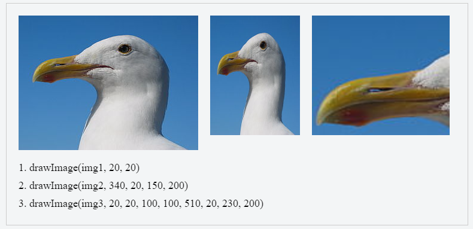
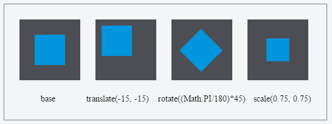

Canvas
Prepared by Yauheni Hladkiy
<canvas> is HTML5 element can be used to draw graphics via scripting in JavaScript.
Basic usage
The rendering context
var canvas = document.getElementById('canvas');
var ctx = canvas.getContext('2d');
Basic template
<head>
<script>
function draw(){
var canvas = document.getElementById('canvas');
var ctx = canvas.getContext('2d');
}
</script>
</head>
<body onload="draw();">
</body>
Drawing shapes with canvas
The grid

Drawing rectangles
fillRect(x, y, width, height);
strokeRect(x, y, width, height);
clearRect(x, y, width, height);
Drawing paths
Steps for make shapes using paths:
- First, you create the path - beginPath()
- Then you use drawing commands to draw into the path - Path methods
- Then you close the path - closePath()
- Once the path has been created, you can stroke or fill the path to render it - stroke() or fill()
Path methods
- moveTo(x,y);
- lineTo(x,y);
- arc(x, y, radius, startAngle, endAngle, anticlockwise);
- arcTo(x1, y1, x2, y2, radius);
- rect(x, y, width, height);
- quadraticCurveTo(cp1x, cp1y, x, y);
- bezierCurveTo(cp1x, cp1y, cp2x, cp2y, x, y);
Path example
function draw() {
var canvas = document.getElementById('canvas');
var ctx = canvas.getContext('2d');
ctx.beginPath();
ctx.arc(75,75,50,0,Math.PI*2,true); // Outer circle
ctx.moveTo(110,75);
ctx.arc(75,75,35,0,Math.PI,false); // Mouth (clockwise)
ctx.moveTo(65,65);
ctx.arc(60,65,5,0,Math.PI*2,true); // Left eye
ctx.moveTo(95,65);
ctx.arc(90,65,5,0,Math.PI*2,true); // Right eye
ctx.stroke();
}
Applying styles and colors
Colors
fillStyle = color //sets the style used when filling shapes.
strokeStyle = color //sets the style for shapes' outlines.
ctx.fillStyle = 'orange';
ctx.fillStyle = '#FFA500';
ctx.fillStyle = 'rgb(255, 165, 0)';
ctx.fillStyle = 'rgba(255, 165, 0, 1)';
ctx.globalAlpha = 0.2;
Line styles
lineWidth = value;
lineCap = type; // butt, round, square
lineJoin = type; // round, bevel, miter


Gradients
createLinearGradient(x1, y1, x2, y2);
createRadialGradient(x1, y1, r1, x2, y2, r2);
gradient.addColorStop(position, color);
Using images
Creating an image
var img = new Image(); // Create new img element
img.src = 'myImage.png'; // Set source path
img.onload = function() {
ctx.drawImage(img, 0, 0);
}
Drawing images
- drawImage(image, x, y);
- drawImage(image, x, y, width, height);
- drawImage(image, sx, sy, sWidth, sHeight, dx, dy, dWidth, dHeight);
Drawing images example
Transformations
Saving and restoring state
- save();
- restore();
Transformation methods
- translate(x, y);
- rotate(angle);
- scale(x, y);

Animations
Basic animation steps
- Clear the canvas - clearRect()
- Save the canvas state
- Draw animated shapes
- Restore the canvas state
Controlling an animation
- setInterval(function, delay)
- setTimeout(function, delay)
- requestAnimationFrame(callback)